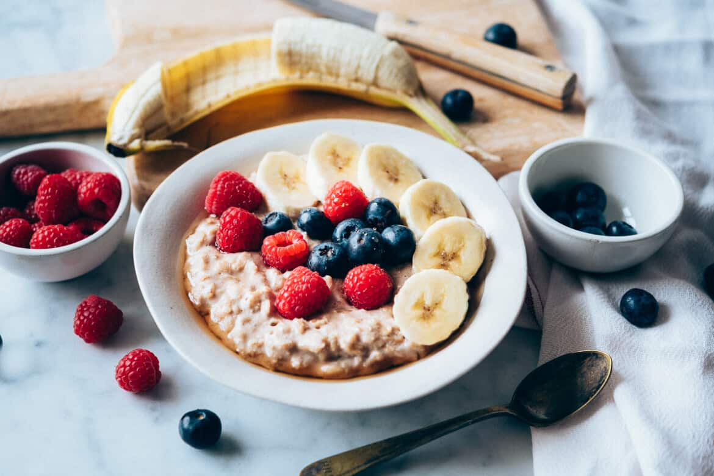

Receta de avena con leche

Descripcion:
La avena es un alimento muy consumido a dia de hoy, es barato, alto de fibra dietetica
Recomendado para toda la familia, se a elaborado esta deliciosa receta para el desayuno habitual
Ingredientes:
- 1 taza de avena en copos
- 2 tazas de leche de vaca
- Canela al gusto
- 3 gotas de esencia de vainilla
- azucar o miel(opcional)
- frutos secos (opcional)
- frutas(opcional)
Pasos:
- Pon a calentar la leche en un cazo a fuego medio y, cuando esté caliente, añade la avena en copos.
- Agrega la canela al gusto, así como la esencia de vainilla. Si la avena con leche te parece muy simple, puedes añadir unas 3 cucharaditas de azúcar, miel o el endulzante de tu preferencia.
- Deja que se cocine por unos 10 minutos y ve revolviendo. No dejes que la leche se seque demasiado, pues cuando la avena se enfríe quedará más seca aún. Sirve en un plato hondo, espolvorea un poco de canela, decora con frutas y frutos secos y disfruta. Aprovecha todos los beneficios de la avena preparándola en todas sus versiones, visita alguna de nuestras recetas con avena e inspírate:
- Servir y disfrutar.